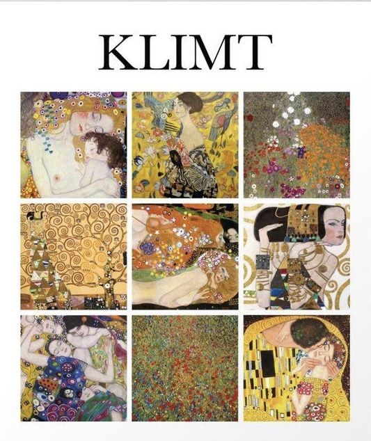
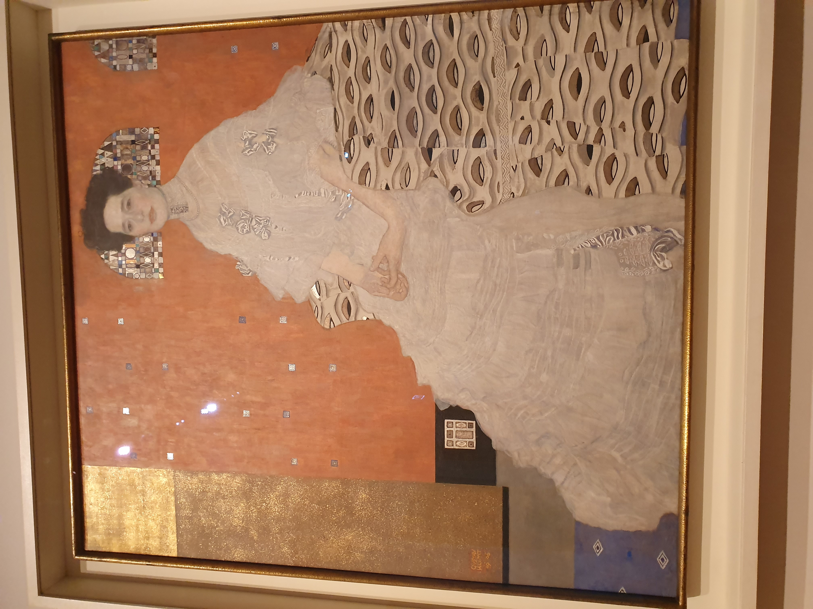
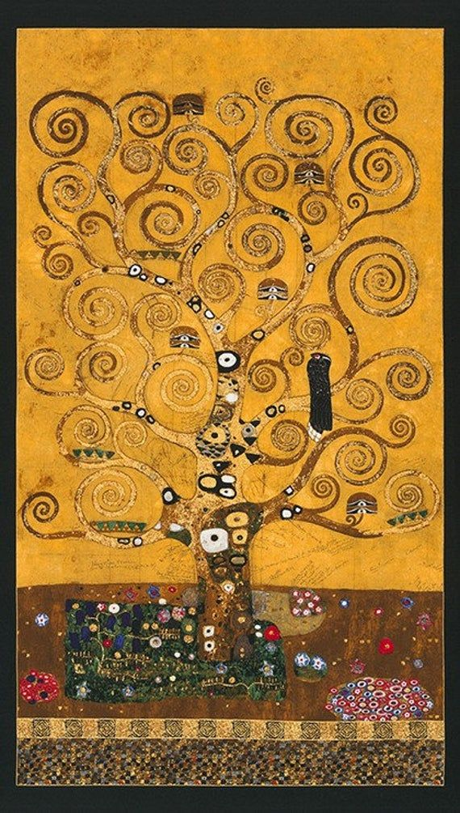
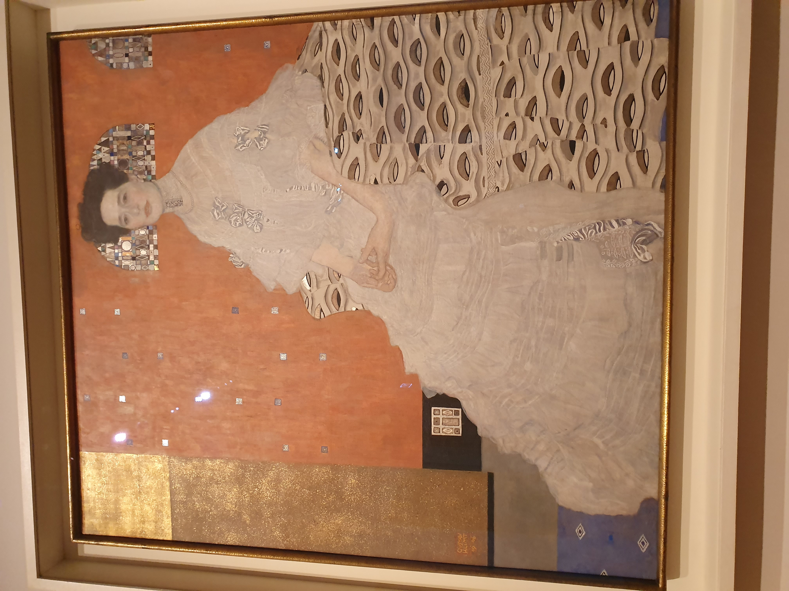
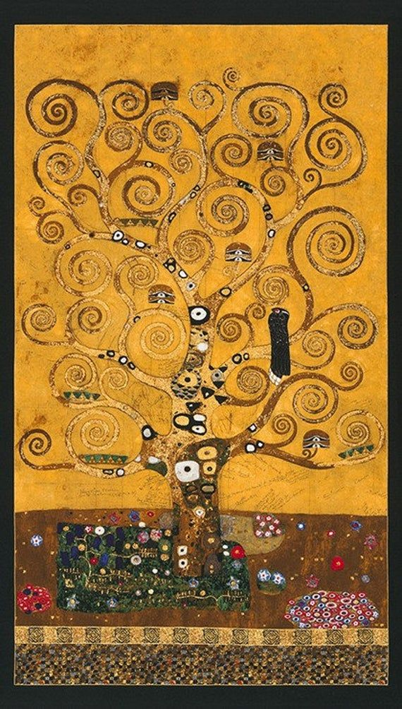

Gustav Klimt was an Austrian symbolist painter, whose primary subject was the female body. His paintings, murals, and sketches are marked by a sensual eroticism, which is especially apparent in his pencil drawings. Klimt attended the Vienna University of Arts and Crafts in 1876, and formed the “Company of Artists” with his two brothers and a friend, after which he was awarded the Golden Order of Merit from the Emperor of Vienna. In 1892, his father and one of his brothers died, leaving him responsible for their families. The family tragedy also affected his artistic vision, which helped him develop his own personal style. Throughout his life, although he was a controversial painter due to his subject matter, he was made an honorary member of the Universities of Vienna and of Munich. He was also a founding member and president of the Vienna Secession, which sought to create a platform for new and unconventional artists, bring new artists to Vienna, and created a magazine to showcase its member work. Klimt lived a simple, cloistered life, in which he avoided other artists and café society. He often wore a long robe, sandals, and no undergarments. He also had many discreet affairs with women, and fathered at least 14 children. This may be an indication of his passion for women, their form and sexuality, which was the main focus of many of his works. The majority of his paintings were characterized by golden or colored swirling designs, spirals, and phallic shapes, depicting dominant women in erotic positions. Klimt died in the influenza epidemic of 1918, leaving behind a posthumous legacy that few artists can rival. His paintings have brought in the highest amounts ever paid at auction.
Gustav Klimt


 


